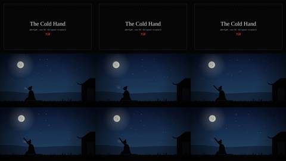
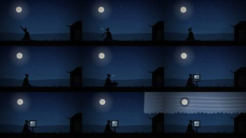
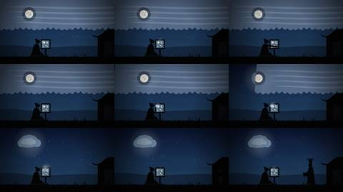
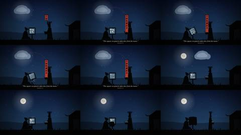
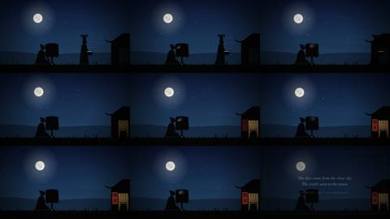
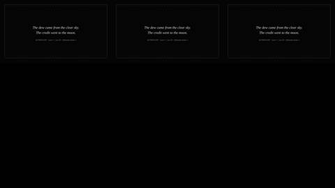
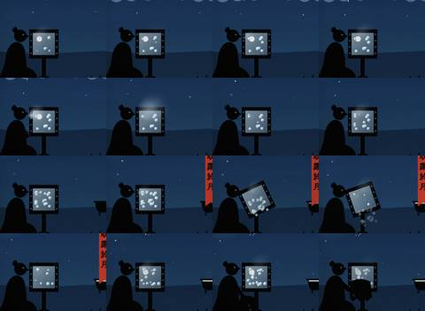
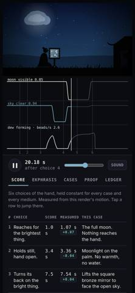

Critic · 2026-10-28 17:09 UTC · looked at 8 images
Independent critic of Cold Hand film
REPAIR 1FAIL 1
The prompt it was given
You are an independent film critic for a short animated film. You did not make it. Judge it strictly and keep an inconvenient verdict.
File: /home/claude/afterlight/the-cold-hand.html. It is a single HTML page with a 38 s deterministic canvas film (#film, 960x540 logical) and a page panel. Python playwright with chromium is installed. Open it via a file:// URL; external font loads may fail, which you can ignore. Render any frame with window.__renderAt(t) (t in film seconds, 0–38), then screenshot the #film element. Look at enough frames to judge the whole film as a viewer would, at least every 1 s, plus the moments in the score. Also look once at a 390x844 phone viewport.
What every render must deliver (the fixed brief): EKPHRASIS: "Night, or the edge of it. A person who is cold sits close to the ground. Above them is the brightest thing in view. At 1.0 s they reach for it. At 3.4 s they hold still with the hand open, and nothing in the hand changes unless the case says it does. At 7.5 s they turn their back on the bright thing toward the object the case provides. At 14.7 s the hand receives what the case delivers, whether heat, fire, water, a reading or nothing, and the body shows it. At 19.0 s a second person arrives and names the cause in their own marks. The marks never touch the world. At 23.8 s the cold person covers, closes or switches off the object. The scene ends at 32 s on what remains: in the hand, in the object, and in the second person's keeping." Scene times are film time minus 3 s, because there is a 3 s title card. INVARIANTS:
- The six onsets land within 0.1 s.
- The bright thing and the delivering mechanism are separate objects.
- The teller's marks never change the world.
- The body answers to the physical variable, not to brightness.
- There is one second where the claim and the light visibly disagree, and a viewer can point to it.
- The last frame shows all three remainders: hand, object, keeping.
THIS CASE (fangzhu, a square bronze mirror): dew forms on cold bronze open to a clear sky. The classical claim (Huainanzi 6.2) is that the square receptacle takes dew from the moon. The intended disagreement is that dew should stop while the moon shines through a gap in the clouds, and should run while the moon is covered. The medium is silhouette theatre after Lotte Reiniger.
Judge the following. Is it watchable as a film: staging, acting, rhythm, legibility of the hand's choices, and clarity of what the person wants? Can a viewer with no labels tell that the dew follows the sky and not the moon? Do the invariants hold on screen? Are there visual errors, such as overlaps, figures that fail to read, or confusing objects? Check the Ledger tab text for factual problems.
Return ONLY these fields, in plain prose with no markdown. Each field is 1–4 sentences. VERDICT: PASS | FAIL | INCONCLUSIVE STRONGEST: VIOLATION: EVIDENCE: REPAIR:








What it reported
VERDICT: FAIL
STRONGEST: Timing and the second disagreement are solid. All six onsets measure within 0.07 s of the score. The beat at film 22.5 to 23.0 s (scene 19.5 to 20.0) is a frame a viewer can point to: the red dashed thread runs from the official's banner to a moon hidden behind a cloud while new dew beads keep appearing on the mirror. The final scene frame (film 35.0) shows all three remainders, covered mirror, tucked hand and the lit hall with 明水 tablet and filled vessel, and the moon is separate from the mirror throughout.
VIOLATION: The teller changes the world without touching it. At scene 20.6 to 21.6 (film 23.6 to 24.6) the mirror tilts by itself while the official stands about 150 px away. The dew pours onto the ground, and his vessel fills anyway. This tilt and collection exist only when the teller is present (cf.noTeller gates it), so the page's own invariant fails: "re-rendered without the teller, every world trace is identical." The Proof test passes only because it compares bead birth times and ignores the beads shown on the mirror. Three more problems: the "square receptacle open to the sky" is an upright panel facing the camera, so it reads as a window or TV screen rather than a dish facing upward. The first disagreement (film 14 to 18 s: moon in a gap, dew stops) is visible only as old beads sitting still, which a viewer without the meter strip will not register. And the cold person's goal is unclear: why someone cold seeks dew, and why they cover the mirror, is never shown.
EVIDENCE: Frames at film 24.0 and 25.0 show the mirror rotated about 30 degrees with beads falling below it and no hand on it, while the official sits at x≈640 with his vessel. Code: drawMirror tilt = cf.noTeller?0:0.5*sm(COLLECT...), and the collected beads are removed only when the teller exists. In frames at film 15 to 18 the bead count stays at about 8 and nothing on the mirror changes. The only change from the dew-forming moments is a ring-shaped hole around the moon in a flat grey curtain whose lower edge sits well above the mirror, so the mirror's own sky does not look covered. In the Ledger, H4's claim that Li Shizhen "rejected" the shell reading needs a citation: Gao You glosses fangzhu as a large clam (大蛤), and Li Shizhen's position is not sourced. P2 admits that polished speculum is a poor radiator, which undercuts the film's central mechanism. The rest checks out: H1/H2 (Huainanzi chs. 6 and 3), H3 (Zhouli 司烜氏 with 鑒) and Monteith 1957 QJRMS 83 are accurate. The phone viewport (390x844) keeps the film and meter strip on top and the panel below, and it works.
REPAIR: Have the official walk to the mirror and tip it with his own hand into his vessel, or drop the collection beat, so the teller's only effect on the world is physical contact or none. Then extend the Proof test to compare the displayed bead state with and without the teller. Turn the mirror face up toward the sky, or angle it clearly, and in the clouded-sky stretch make the stop visible: beads shrinking or evaporating, or the meter's breath and shiver cue changing. Do not rely on an unchanging count. Before the reach, add one gesture that establishes the person's motive (thirst, or gathering water for the hall), and either source or delete the Li Shizhen clause in H4.